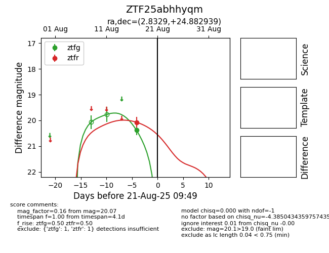

Target ZTF25abhhyqm at 2025-08-21 09:49, see:
FINK: fink-portal.org/ZTF25abhhyqm
Lasair: lasair-ztf.lsst.ac.uk/objects/ZTF25abhhyqm
ALeRCE: alerce.online/object/ZTF25abhhyqm
alt names
ZTF25abhhyqm (ztf,alerce)
coordinates:
equatorial (ra, dec) = (2.8329,+24.88294)
galactic (l, b) = (111.5107,-37.09775)
photometry
last ztfg=20.38, ztfr=20.07
1 ztfg, 1 ztfr detections
